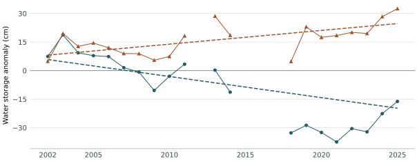

Northwest and central India · GRACE and GRACE-FO
Water after the monsoon
Did water storage change at the same rate in northwest India and Madhya Pradesh after the summer monsoon?
Regional water storage
Northwest India covers Rajasthan, Punjab, Haryana and Delhi. Neighboring Madhya Pradesh also has its post-monsoon season in October and November, so we can compare the same months in both places. Zero is each region’s own average storage in 2004–2009. A value of −10 cm means the region held less water than that average, equivalent to a 10 cm layer spread across its area.
Loading NASA observations…
Post-monsoon storage
Two regions through time

How did the trends differ?
| Region or comparison | Rate (cm/decade) | Approx. 95% interval |
|---|
See every post-monsoon estimate (cm)
| Year | Northwest Oct | Northwest Nov | Northwest mean | Madhya Pradesh Oct | Madhya Pradesh Nov | Madhya Pradesh mean |
|---|
How to read the data and uncertainty
GRACE senses changes in total water stored in groundwater, soil, surface water and snow. Recovering an absolute volume or isolating groundwater would require extra information. The monthly series starts in April 2002. Missing months appear as gaps, including the break between satellite missions.
Each post-monsoon point averages October and November equally and requires both observations. Comparing the same months each year controls for the usual seasonal cycle. Each line fits only shared complete seasons and accounts for correlation across calendar years. Each approximate 95% interval describes uncertainty in that fitted slope. It excludes additional uncertainty from satellite measurements and the regional boundary.
The interval treats the estimated correlation as fixed. For northwest India the estimate reached the model’s upper limit of 0.95, which makes the interval particularly sensitive to that choice.
The regional mean weights each grid square by the area inside each study region. The 0.5° grid represents broader measurements at about 3° resolution. Adjacent regions can share satellite measurement areas along their border. We used the JPL coastal-filtered product without optional gain factors.